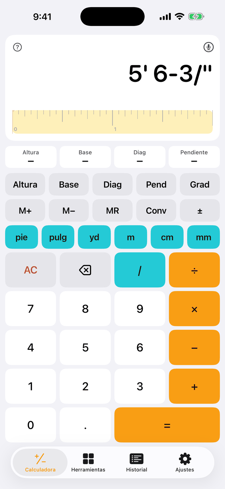
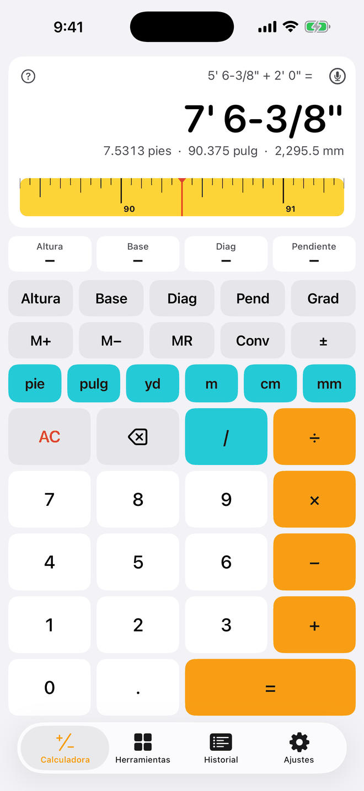
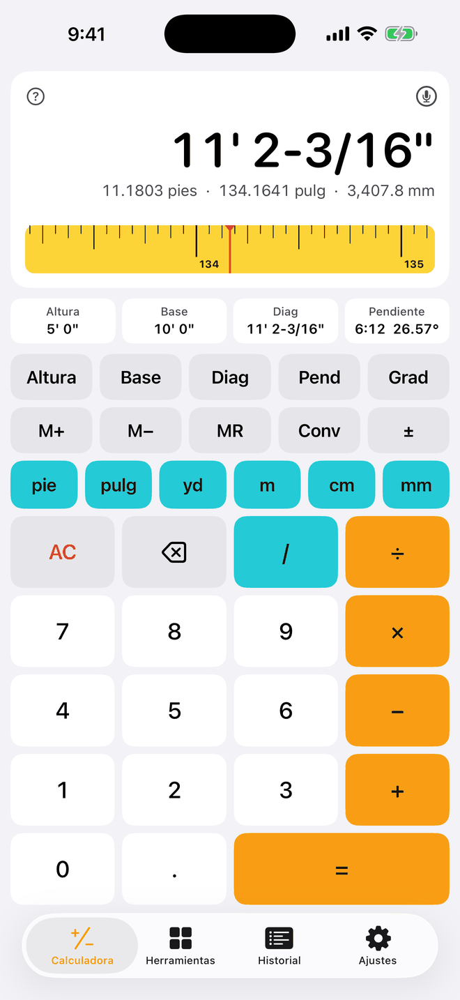
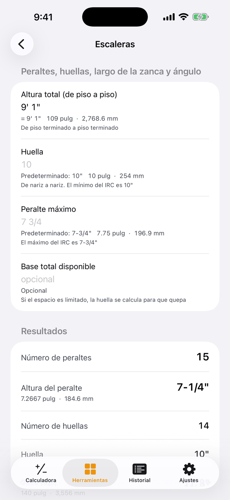
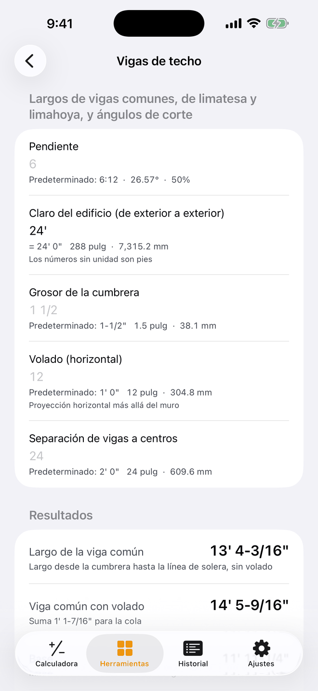
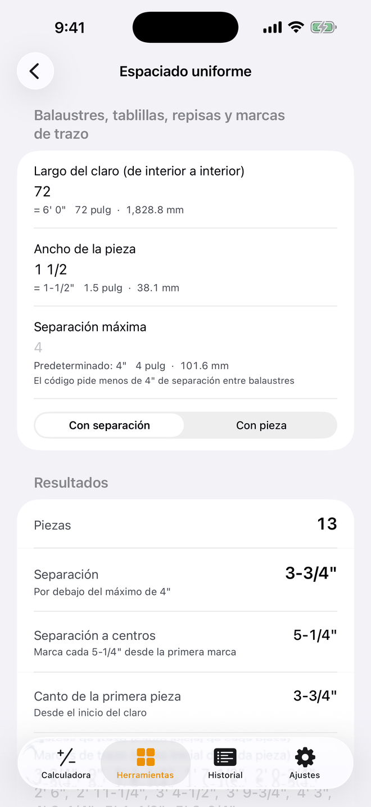

FootInch: soporte y ayuda
FootInch es una calculadora para construcción en pies, pulgadas y fracciones para iPhone y iPad, con el mismo motor y las mismas herramientas que FootInch para Android. Pagas una vez, sin suscripción. Escribe a support@top7systems.net y te responde la persona que la hizo.
En esta página
Cómo escribir medidas
Escribe una medida como la dices: el número y luego la unidad.
5 pie 6 → 5' 6" (un número después de pie son pulgadas)
6 pulg 3 / 8 → 6-3/8" (una fracción después de pulg es parte de esa pulgada)
3 / 8 → 0.375 (una fracción sin unidad es solo un número; toca pulg para que sea 3/8")
1676 mm → 1,676 mm (toca pie para leerlo como 5' 6")
10 pie pie → 10 pies² (toca una unidad dos veces para cuadrada, tres veces para cúbica)
5 pie 6 pulg + 3/8 = da 5' 6-3/8". Si multiplicas por un número sin unidad, la medida se escala: 5 pie 6 pulg × 2 = da 11' 0".

Cuentas, áreas y volúmenes
× 4 pulg = → 40 pies³
yd → 1.481 yd³ (toca cualquier tecla de unidad sobre un resultado para convertirlo)
10 pie ÷ 3 = → 3' 4"
10 pie ÷ 2 pie = → 5 (un largo entre otro largo da una proporción)
Si multiplicas dos largos te da un área, y un área por un largo te da un volumen; la pantalla lleva la cuenta de las unidades por ti. × y ÷ se calculan antes que + y −, como en una calculadora científica. Cada toque de Conv cambia la pantalla entre pies-pulgadas, pies decimales, pulgadas, pulgadas decimales, yardas, metros, centímetros y milímetros; la línea debajo del resultado siempre muestra las tres equivalencias más útiles.
La cinta en pantalla
Debajo de cada resultado de longitud, FootInch dibuja un tramo de dos pulgadas de cinta métrica con marcas cada 1/16", los números de pulgadas acumuladas, las marcas de pie en rojo y una línea roja en tu resultado. Pon el teléfono junto a tu cinta y pasa la marca sin volver a leer la fracción. En métrico, la regla muestra milímetros con los números de los centímetros.
Altura, Base, Diagonal y Pendiente
6 Pend 10 pie Base Altura → 5' 0" (6 significa 6:12)
30 Grad Pend 10 pie Base Diag → 11' 6-9/16"
45 Grad Pend 10 pie Base Altura → 10' 0"
Ingresa dos de Altura, Base, Diagonal o Pendiente y toca las otras teclas para leerlas. Toca Grad antes de Pend para ingresar grados. El panel debajo de la pantalla muestra los cuatro valores; toca uno para regresarlo a la pantalla y seguir calculando con él (por ejemplo, Diag × 2 = para dos zancas). Si ingresas un tercer valor, reemplaza al más antiguo.

Entrada por voz
Toca el micrófono en la parte de arriba de la pantalla y di una medida o una operación completa. FootInch deja de escuchar después de una pausa corta, te muestra lo que escuchó y toca las teclas por ti. El propio teléfono reconoce lo que dices con el reconocimiento de voz en español de Apple en el dispositivo, así que nada se sube a internet y funciona sin conexión.
“diez pies por doce pies” → 120 pies²
“ciento veinte pulgadas entre cuatro” → 2' 6"
“tres metros más cuatrocientos cincuenta milímetros” → 11' 3-13/16"
“seis punto cinco pulgadas” → 6-1/2"
“cinco pies y medio” → 5' 6"
Entiende números en palabras o en cifras, las fracciones medios, cuartos, octavos, dieciseisavos, treintaidosavos y sesentaicuatroavos, las unidades pies, pulgadas, yardas, metros, centímetros y milímetros, y más, menos, por, entre e igual. Las palabras de relleno se ignoran. Si no entiende algo, el mensaje debajo de la pantalla te dice lo que escuchó.
Historial, memoria, copiar y deslizar
Atajos de teclado en iPad
Herramientas y sus fórmulas
Cada campo de las herramientas acepta 5' 6 3/8", 5 pie 6 pulg, 66.375, 6-3/8, 1676 mm o 2.5'. La línea gris debajo de cada campo muestra cómo se leyó lo que escribiste. Los resultados usan las unidades y la precisión de fracciones de tu calculadora, y los dos más importantes se quedan fijos arriba del teclado mientras escribes.



Escaleras (gratis)
Huellas = peraltes − 1 Base total = huellas × huella (o ajustada a la base disponible)
Zanca = √(altura total² + base total²) Ángulo = atan(altura total ÷ base total)
La revisión de código sigue el IRC R311.7.5: peralte máximo de 7-3/4" y huella mínima de 10". La prueba de comodidad es 2 × peralte + huella, idealmente de 24 a 25". Confirma con el reglamento de construcción de tu localidad.
Vigas de techo
Largo de la viga común = base ÷ cos(pendiente) Cola del volado = volado ÷ cos(pendiente)
Limatesa/limahoya = √((base × √2)² + altura²) Pendiente de limatesa = altura : (base × √2), expresada por cada 17"
Diferencia entre vigas cortas = separación ÷ cos(pendiente) Corte a plomo = ángulo de la pendiente, corte de asiento = 90° − ángulo de la pendiente
Corte lateral de la viga corta = atan(1 ÷ cos(pendiente)) como ajuste de inglete (45° en planta)
Los largos son de línea, desde la línea de la solera hasta la línea de la cumbrera; suma la cola para el volado y descuenta la cumbrera como se indica.
Techos
Paquetes = cuadros × paquetes por cuadro Entablado = área ÷ 32 pies² Rollos de fieltro = cuadros ÷ 4
Concreto
Bultos: 80 lb = 0.60 pies³, 60 lb = 0.45 pies³, 40 lb = 0.30 pies³ Peso ≈ 150 lb por pie³
L = largo, A = ancho, E = espesor, D = diámetro, H = altura.
Block y ladrillo
Ladrillo modular: 6.75 por pie², unos 37 por bulto de 80 lb, 3 hiladas por cada 8"
Tablaroca y tableros
Compuesto para juntas ≈ 0.053 lb por pie² Cinta para juntas ≈ 0.37 pies por pie² Tornillos ≈ 1.1 por pie²
Pies tabla
Armado de muros
Círculo y arco
Arco con la cuerda c y la altura h: R = c² ÷ (8h) + h ÷ 2 Ángulo = 2 × asin(c ÷ 2R) Largo del arco = R × ángulo
Polígono
Radio exterior = s ÷ (2 sin(180° ÷ n)) Radio interior = s ÷ (2 tan(180° ÷ n)) Área = n × s × radio interior ÷ 2
Moldura de corona e inglete compuesto (moldura acostada)
Inclinación de 38°, esquina de 90° → inglete 31.62°, bisel 33.86° Inclinación de 45°, esquina de 90° → 35.26°, 30°
Espaciado uniforme
Pieza en ambos extremos: n = ceil((L + separación máx.) ÷ (ancho + separación máx.)), separación = (L − n × ancho) ÷ (n − 1)
Pendiente e inclinación
Ajustes
FootInch está en español y en inglés, y sigue el idioma de tu iPhone o iPad. Para usarla en otro idioma sin cambiar el del dispositivo, ve a la pestaña Ajustes de FootInch → Idioma.
FootInch Pro y cómo restaurar compras
FootInch Pro es una compra única que desbloquea todas las herramientas. Queda ligado a tu Cuenta de Apple y se comparte con tu familia mediante Compartir en familia. Si reinstalas la app o cambias de teléfono, abre Ajustes → Restaurar compras con la sesión iniciada en la Cuenta de Apple con la que lo compraste.
No hay suscripción y nunca la habrá. Si se te cobró más de una vez, pide un reembolso a Apple en reportaproblem.apple.com y avísanos para que te ayudemos.
El desbloqueo Pro es por tienda: una compra en el App Store no desbloquea la app de Android, ni al revés.
Preguntas frecuentes
Un resultado no coincide con mi calculadora de bolsillo.
Revisa en Ajustes la precisión de fracciones (1/16" si no la cambias) y la unidad de “Números sin unidad en”. Los resultados de vigas de techo y escaleras son largos de línea, antes de cortes y volados, y las cantidades de techos incluyen el porcentaje de desperdicio que ingresaste.
¿Por qué 3/8 + 1/2 da 0.875?
Las fracciones sin unidad son solo números hasta que les pones una unidad. Toca pulg sobre el resultado para leer 7/8".
El botón de voz dice que el reconocimiento de voz no está disponible.
La entrada por voz necesita el reconocimiento de voz en el dispositivo para español, que iOS ofrece en los iPhone y iPad recientes. Si los recursos de idioma de Siri en el dispositivo todavía no se descargan, abre Configuración → General → Teclado, revisa que tengas un teclado en español y activa la opción Activar dictado; luego vuelve a intentarlo.
¿Puedo escribir medidas métricas en las herramientas?
Sí: escribe 2768 mm, 2.768 m o 276.8 cm en cualquier campo de longitud. Cambia el sistema de medidas en Ajustes para ver los resultados en métrico.
¿Funciona sin conexión?
Por completo.
Contacto
Escribe a support@top7systems.net. Si un resultado se ve mal, incluye las teclas que tocaste o una captura de pantalla de la calculadora y del historial; el botón para compartir del historial manda todo el historial como texto.